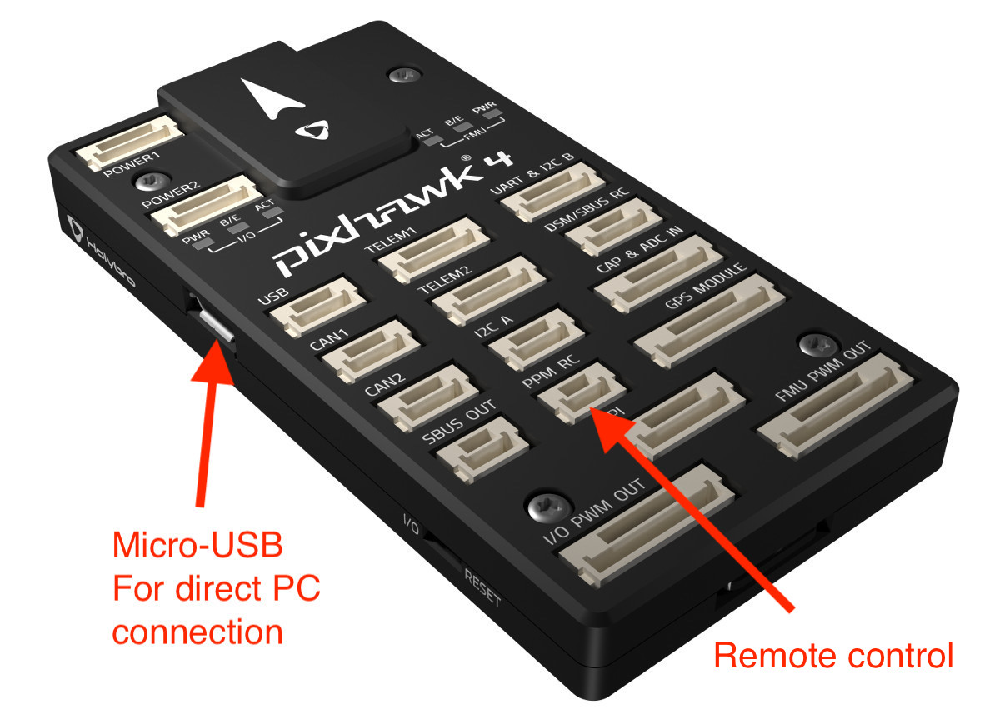
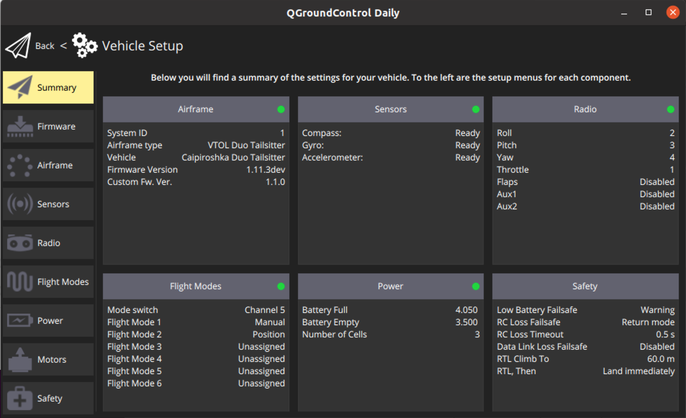

IRON Bird
The Iron Bird can be used for hardware in the loop testing. It consists of a Pixhawk 4, a board for the power electronics, two motors, two servos, a GPS receiver and optionally a remote control and an UpBoard.

Quickstart
- Install the PX4 Toolchain
- Clone the Elektra Solar PX4 (Version 1.11). For external control use branch feature/ext_control.
$ git clone git@bitbucket.org:elektrateam/px4-autopilot.git --recursive- Manually use the correct commit hash to check out the submodules in the appropriate version (detached head). The commit hashes are displayed in the repro. Special care with the Sub-Submodule PX4-OpticalFlow in the Sumbodule PX4-SITL_gazebo.
- update submodule libuavcan with
$ git submodule update --init- Try to Build the code
$ make px4_sitl gazebo- Install QGroundControl (Linux: You can add a Launcher to start the AppImage from the dash)
- Connect the IRON Bird via Micro USB to the QGroundControl computer.

- QGroundControl should detect the Pixhawk 4 directly.

- Load the parameter file inorder to use QGroundcontrol via USB while arming (e.g. sets parameter CBRKUSBCHK to 197848 )
Remote Control
The remote control can be connected directly to the PPM RC connector on the Pixhawk 4. In addition, a power supply via USB is required. 
- Arming the Drone with the RC use the Arming Gesture.